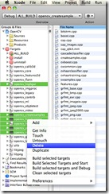

Building OpenCV for iOS
This post is outdated.
Current version of OpenCV supports iOS toolchain and can be build in much easier way. You are welcome to read this post for educational purposes. It's 99.9% chance that you will not be able to build OpenCV using instructions decribed here.
OpenCV (Open Source Computer Vision) is a library of programming functions for real time computer vision. This library has a huge number of algorithms.OpenCV supports Windows and Linux platforms (and Android starting from 2.2 version). But, unfortunately, there is no official iOS platform support for this moment. In this post i will show you that can build OpenCV for this platform and run it on your iPhone or iPad.
Software you’ll need
- XCode (Developer profile to be able debug on device)
- CMake
- Fresh OpenCV
- SVN command line tool or any GUI SVN client
Getting the new version of OpenCV is pretty easy - just check out them from public svn repository:
mkdir opencv-library
cd opencv
svn co https://code.ros.org/svn/opencv/trunk/opencv
I suggest to use the most actual version instead official releases because, usually guys from WillowGarage commit several bug fixes per week.
Building
Now, when we have copy of OpenCV source code we need to generate XCode workspace to build it. Run CMake (I prefer to use CMake GUI, but use of command line tool is also possible). Select correct source code directory and specify folder where generated workspace should be placed and hit “Generate” button. Choose XCode workspace in dialog window. Now your CMake window should looks like this:

Here we should change few flags:
- BUILD_SHARED_LIBS = NO
- BUILD_NEW_PYTHON_SUPPORT = NO
- BUILD_EXAMPLES = NO
- ENABLE_SSE.. = NO (All of them)
- WITH_EIGEN2 = NO
- WITH_PVAPI = NO
- WITH_OPENEXR = NO
- WITH_QT = NO
- WITH_QUICKTIME = NO
And one more important option which define folder where libraries headers will be placed:
* CMAKE_INSTALL_PREFIX = <Your path here>
In this article I use following directory structure: * opencv-library/opencv – Sources from SVN repository * opencv-library/build – Build directory * opencv-library/install-dir – Install directory
Hit “Configure” and then “Generate”. We a ready to build OpenCV. Locate and load OpenCV.xcodeproj in your build directory to XCode. Here we also should do some tricks.

1) Change SDK from MacOS SDK to iOS SDK. It’s important, because with this option we tell XCode correct architecture (armv6/armv7).

2) Disable Compile for Thumb for all projects. Disabling thumbs will increase speed of floating point operations twice 1!

Notice: Disabling “Compile for thumbs” option is actual only for iPhone 3G and older models. If you are targeting to the iPhone 3GS and never models with modern CPU (armv7 architecture) you don’t need to disable “Compile for Thumbs”. Thanks to the Shervin Emami, who pointed me to this nuance.

Finally we are ready to build something! We have to build both debug and release configurations for both device and simulator platform. But when we start building library, we will got a lot of compilation errors in highgui project. This happening because OpenCV uses QTKit for camera capturing. Unfortunately, this framework is missing in iOS. There are two ways - remove problem files from project (This requires some knowledge of CMake syntax) or simply not use highgui in your project. For you it means you won’t be able to use very useful functions: cvLoadImage, cvShowImage, cvCreateCaptureFromCam, cvCreateCaptureFromFile etc… But, actually it’s not a big problem - iOS API provide all methods you may want to do such things. There are not elegant, but working solution – simply remove all projects, that uses highgui library from workspace (and highgui itselft). After this manipulations all projects should compile without problems.
Bringing all together
Okay, now we have four versions of staticaly linked libraries. And I suggest to use lipo tool to create fat-binaries for OpenCV libraries. It’s very useful to have one lib file for both Simulator (i386 architecture) and Device (armv6/armv7). Here is bash script that will merge them together:
# Create armv7 + i386 OpenCV library
mkdir -p build/lib/universal
lipo -create build/lib/Release-iphoneos/libopencv_calib3d.a build/lib/Release-iphonesimulator/libopencv_calib3d.a -output build/lib/universal/libopencv_calib3d.a
lipo -create build/lib/Release-iphoneos/libopencv_contrib.a build/lib/Release-iphonesimulator/libopencv_contrib.a -output build/lib/universal/libopencv_contrib.a
lipo -create build/lib/Release-iphoneos/libopencv_core.a build/lib/Release-iphonesimulator/libopencv_core.a -output build/lib/universal/libopencv_core.a
lipo -create build/lib/Release-iphoneos/libopencv_features2d.a build/lib/Release-iphonesimulator/libopencv_features2d.a -output build/lib/universal/libopencv_features2d.a
lipo -create build/lib/Release-iphoneos/libopencv_gpu.a build/lib/Release-iphonesimulator/libopencv_gpu.a -output build/lib/universal/libopencv_gpu.a
lipo -create build/lib/Release-iphoneos/libopencv_imgproc.a build/lib/Release-iphonesimulator/libopencv_imgproc.a -output build/lib/universal/libopencv_imgproc.a
lipo -create build/lib/Release-iphoneos/libopencv_legacy.a build/lib/Release-iphonesimulator/libopencv_legacy.a -output build/lib/universal/libopencv_legacy.a
lipo -create build/lib/Release-iphoneos/libopencv_ml.a build/lib/Release-iphonesimulator/libopencv_ml.a -output build/lib/universal/libopencv_ml.a
lipo -create build/lib/Release-iphoneos/libopencv_objdetect.a build/lib/Release-iphonesimulator/libopencv_objdetect.a -output build/lib/universal/libopencv_objdetect.a
lipo -create build/lib/Release-iphoneos/libopencv_video.a build/lib/Release-iphonesimulator/libopencv_video.a -output build/lib/universal/libopencv_video.a
lipo -create build/lib/Release-iphoneos/libopencv_flann.a build/lib/Release-iphonesimulator/libopencv_flann.a -output build/lib/universal/libopencv_flann.a